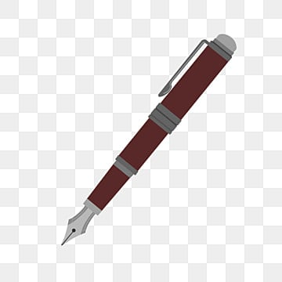
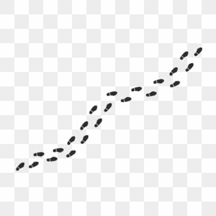
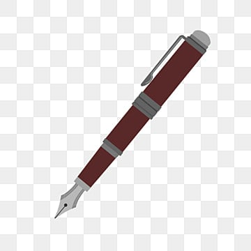
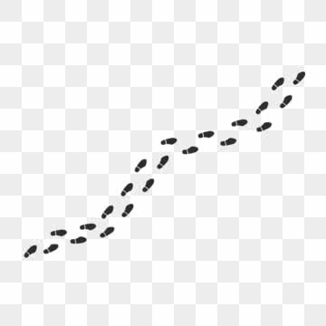

Puzzle Piece
Emotional Interaction & Accessibility

Role
UX/UI Designer
Timeline
3 Weeks
Tools
Illustrator, Photoshop
Context
Academic Project
About Production
Brief Description
“Puzzle Piece” explores emotional alignment through simple, quiet visual storytelling. Each part reflects a stage of personal realization, ending with Piece 315: THE CLICK, representing a moment of deep emotional clarity.
Creative Problem
The challenge was to express emotional resonance—without animation, text overlays, or complex interaction. The visual needed to communicate connection using only colour, spacing, and metaphor.
Solution
Puzzle pieces were used as a metaphor for alignment. Soft colour palettes, minimal layout, and generous spacing created a calm emotional tone, allowing the “click” moment to feel grounded and intentional.
Process & Development
Miro Board
Early emotional mapping and structure exploration were done in Miro.

Rough Versions
Explored spacing, tone, puzzle-piece placement, and softness.


Screen Captures
Captured process screenshots showing refinement and layering.

Reference Photos
Used royalty-free stock images only for lighting/palette reference.
 




Results
Part 1 — Pieces I Didn’t Know Were Missing

Part 2 — Pieces That Didn’t Fit Yet Mattered

Part 3 — When the Pieces Made Sense

Part 4 — The Quiet Work

Piece 315 — The Click
Credits
- Design: Michelle Miyata
- Images: All created by me unless noted
- Stock photos for reference only (Unsplash / Pexels)
Acknowledgments
Created under the guidance of Professor Chris, whose reflective and structured feedback shaped the emotional clarity of the final piece.